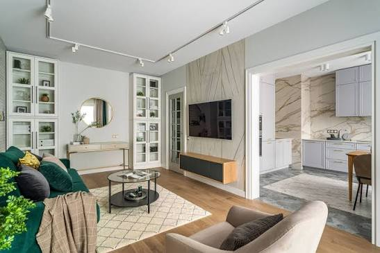

ВАШ РЕМОНТМЕСТО ДЛЯ ОТДЫХА ↗



Продуманный ремонт.
От первого чертежа до последней детали.
Дом должен быть удобным, уютным и отражать характер своих жителей. Мы продумываем каждый этап, бережно работаем с материалами и уделяем внимание деталям, чтобы воплотить ваши идеи.
Подборка интерьерных решений.
Представьте, каким может стать ваш дом.
Хороший ремонт — это больше, чем красивая отделка.
Прокрутите страницу, чтобы увидеть, что за ней стоит.
Точный план, согласованный объём работ и надёжная основа для следующих этапов.
Всё по плану.
От первой идеи до новоселья.
Выслушаем ваши идеи, узнаем о привычках семьи и обсудим возможности пространства.
Согласуем дизайн, материалы, объём и сроки до начала ремонта.
Аккуратно выполняем работы, держим вас в курсе и вместе проверяем результат.
Расскажите о своих планах.
Вместе найдём лучшее решение.